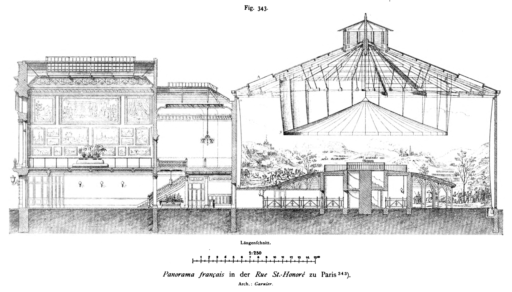

layout:true name: basic-without-footer --- name: Titre class: center, middle template: basic-without-footer **Digital Trends** <h1 class="theTitle">VR Tech - Etat de l'art</h1> *Durée: env. 8 périodes (1 journée)* --- layout:true name: basic-with-footer <footer><span>Digital Trends - VR Tech - Etat de l'art</span></footer> --- template: basic-with-footer # Sommaire - Applications de la VR - Matériels - Exemples d'app à succès - Immersion - Déplacements - Performances graphiques - Audio - Réflexion/discussion: UX et interfaces de jeux VR --- # Applications de la VR ### Quelles applications à la VR ? -- - Marketing - Jeux vidéos - Musées - Prototypage - Education/formation (médecine, ...) - Télétravail - Cinéma (animations) -- ### La VR, un média qui englobe tous les autres? <!---------------------- MATERIEL VR HISTORIQUE ----------------------> --- class: center, middle # Etat de l'art: Matériels VR ### [Historique](#histoire) ### [Aujourd'hui](#mat-today) --- layout:true template:basic-with-footer name:basic-with-footer-material *Etat de l'art: Matériels VR - Historique* --- name: histoire ## XIXe s. - Peintures panoramiques  --- class: half ## XIX-XXe s. - Stéréoscopes et View-Master   --- ## Début du XXe s. - Link Trainer .center[] --- ## Années 50 - Sensorama + 6 films, par Morton Heilig .center[] --- ## Années 60 - Telesphere Mask, premier head-mounted display (HMD), par M. Heilig .center[] --- ## 1961 - Headsight, premier HMD avec motion tracking, par Comeau et Bryan .center[] --- ## 1968 - The Sword of Damocles, premier dispositif VR, par Ivan Sutherland .center[] --- ## 1981 - ASPEN MOVIE MAP, propotype de cartes interactives, par le MIT .center[] --- ## 1990 - NASA-VIEW (Virtual Interface Environment Workstation), casque, gants et combinaison connectés .center[] --- ## 1992-2014 - SEGA VR/R360 (1992): https://oculusnext.com/sega-vr/ - My3D Hasbro (2011): - Oculus Rift (2013): - Google Carboard (2014): - ... <!---------------------- MATERIEL VR AUJOURD HUI ----------------------> --- layout: true name: mat-today-title --- class: center, middle # Etat de l'art: Matériels VR ## Aujourd'hui --- layout:true name: mat-today-layout template: basic-with-footer *Etat de l'art: Matériels VR - Aujourd'hui* --- name: mat-today ### Fonctionnalités offertent par les casques de RV Les casques de RV peuvent aujourd'hui être catégorisés par rapport à la variété de fonctionnalités qu'ils offrent. Ces fonctionnalités sont principalement: - Le suivi de position - 3DOF: Three Degrees Of Freedom ou suivi de rotation - 6DOF: Six Degrees Of Freedom ou suivi de position - Le type de contrôleur (si il en existe) - 3DOF: voir ci-dessus - 6DOF: voir ci-dessus - Connecté à un PC, à un mobile ou indépendant *Tous les casques sont au minimum 3DOF* --- ### Casques populaires récents | Casques | Platforme | 6DOF | Contrôleurs | Contrôleurs 6DOF | |:-------- |----------:|:----:|:-----------:|:----------------:| | HTC Vive Cosmos | PC | ✔ | ✔ | ✔ | | Oculus Rift S | PC | ✔ | ✔ | ✔ | | Oculus Quest | Standalone | ✔ | ✔ | ✔ | | Oculus Go | Standalone | ❌ | ✔ | ❌ | | Google Cardboard | Android | ❌ | ❌ | ❌ | | Sony Playstation VR | Playstation| ✔ | ✔ | ✔ | .littlePicture[] .littlePicture[] .littlePicture[] *De gauche à droite: Oculus Quest, HTC Vive Cosmos, Google Cardboard* <!---------------------- APPS ----------------------> --- layout:true template: basic-with-footer --- # Quelques app à succès... - [Beat Saber](https://beatsaber.com/) - Inclut: musique, espace, profondeur - Sans textes, sans déplacements du joueur (ou légers) - Dispo: Steam, oculus store, PS, Humble bundle - [Google earth VR](https://www.youtube.com/watch?v=SCrkZOx5Q1M&feature=youtu.be) - Interface intéressante: déplacer le soleil (jour/nuit) - Pas de téléportation, on amène l'endroit choisi à soi De manière générale, une application VR ne doit pas permettre de prendre le contrôle de la caméra. Problème: [mal du voyage ou motion sickness](https://en.wikipedia.org/wiki/Virtual_reality_sickness). (Considérée comme app "à succès": bien réussi, pas forcément populaire) <!---------------------- Immersion ----------------------> --- layout:true template: basic-with-footer # Etat de l'art: Immersion --- - Le [Field of view](https://vr-lens-lab.com/field-of-view-for-virtual-reality-headsets/) (FOV) n'est pas optimal sur les casques actuels - le FOV des devices = en moyenne 90-110° - le FOV humain = 200-220° <img src="./img/fov.png" style="height: 35vh" /><br> [*Source*](https://fr.wikipedia.org/wiki/Champ_visuel#/media/Fichier:Champ_vision.svg) --- ## Le casque (gênant, lourd) - Deep Diving: jeu de plongée VR - détourne ce problème - https://store.steampowered.com/app/1104050/Deep_Diving_VR/ --- ## [Screen Door Effect (SDE)](https://www.howtogeek.com/404491/what-is-the-screen-door-effect-in-vr/) - L'effet: on voit le "grillage" de pixels - Cause: zoom sur l'écran dans le headset, en plus du fait qu'il est proche des yeux - Solution: meilleure résolution de l'écran (8K) <img src="./img/sde.jpg" style="height:20vh" /><br> [*Source*](https://en.wikipedia.org/wiki/Screen-door_effect#/media/File:Screen-door_effect.jpg) --- ## [Mura Effect](https://www.roda-computer.com/technology/mura-effect/) - L'effet: les à-plats de couleurs ne sont pas homogènes - Cause: la composition des écran empêche une luminosité tout à fait régulière <img src="https://external-preview.redd.it/lmskdQbKiWAh14j5dxhCPn-iLTx_uBkHcwZksUQz328.jpg?auto=webp&s=93735d53c775da1b0702cb0fa8126363426f9d53" style="height:25vh" /> --- ## [Aliasing](https://fr.wikipedia.org/wiki/Anticr%C3%A9nelage) - L'effet: les arrondis sont saccadés - Cause: les pixels sont carré, les courbes sont pas possible sur écran - Anti-aliasing: technique d'"anticrénelage" (FR) pour lisser les courbes et diagonales, grâce au flou <img src="https://upload.wikimedia.org/wikipedia/commons/2/24/Antialiasing_comparaison.gif" style="height:25vh" /> --- ## [Glare ou God rays](https://3dinsider.com/vr-lenses/) - L'effet: En cas de forts contrastes, ça "bave". On voit les rayons lumineux. - Cause: Les lentilles dans le casques. - Solution: limiter les forts contraste dans le design du jeu/de l'app. <img src="http://i.vimeocdn.com/video/569557579_1280.jpg" style="height:28vh" /> <!---------------------- Déplacement ----------------------> --- layout:true template: basic-with-footer # Etat de l'art: Déplacements --- ### Les déplacements sont problématiques dans la VR. ## Problèmes: - Mal du voyage (ou moiton sickness) lorsque le déplacement visualisé est décalé de celui contrôlé par l'utilisateur. - L'espace réel est souvent restreint: dans une pièce, souvent 2-3m2 ### Comment garder le réalisme des déplacements, sans les permettre en réalité? --- ### Différentes solutions - **Le chaperon**: faire des murs virtuels quand y a des murs en realité. Mais qu'en est-il pour les mondes infinis? - Utiliser des **véhicules**: l'utilisateur reste sur place en réalité, c'est le véhicule qui se déplace dans le virtuel. - **La téléportation**: l'utilisateur ne bouge pas. - **[Rediect walking](https://www.youtube.com/watch?v=u8pw81VbMUU)**: fausser la perception de l'esprit avec un décalage mouvements réels/virtuels. - **Suites de mouvements adaptées à l'univers**, pensés pour que l'utilisateur revienne sur ses pas, et reste dans un espace restreint. --- ### Différentes solutions (suite) - **Overlapping** des salles pour fausser l'esprit: jeu des distances. Difficile pour le cerveau de se représenter les distances. <img src="./img/overlapping.png" style="height:33vh" /> --- ### Différentes solutions (suite) - **Tapis VR**: permet le déplacement infini. Le problème: ils sont dangereux, besoins de harnais, ou d'une sécurité de soutien. <img src="https://i.pinimg.com/originals/86/51/71/8651710cd1970bc5c5d6892064fcc03b.jpg" style="height:33vh" /> <!---------------------- Performances graphiques ----------------------> --- layout:true template: basic-with-footerf --- # Etat de l'art: Performances graphiques L'idéal serait d'avoir une résolution min. de 8k, avec un FOV de 180°, et une fréquence min. de 90Hz Le problème: les cartes graphiques actuelles ne le permettent pas. **Quelques solutions:** - **[Le foveated rendering](https://en.wikipedia.org/wiki/Foveated_rendering)**: on améliore le centre de l'image, et de moins en moins en plriphérie de la vision pour réduire le temps de calcul. Avec du eye-tracking intégré aux casque cela pourrait être d'autant plus performant. - **[Asynchronous interleaved reprojection](https://en.wikipedia.org/wiki/Asynchronous_reprojection)**: des images sont chargées, puis adaptées avec les informations de mouvements du casque. Voir: [Google light field](https://www.blog.google/products/google-ar-vr/experimenting-light-fields/) et [Light-field camera](https://en.wikipedia.org/wiki/Light-field_camera) <!---------------------- le son en VR ----------------------> --- # Etat de l'art: le son en VR ## Le son en VR est positionnel, donc également en 3D. En savoir plus: [VR positional Audio](https://realnewworld.com/vr-positional-audio/) --- # Réflexion/discussion: ## UX/interface de jeux VR, quelles problématiques? --- # Sources - [Virtual Reality Society](https://www.vrs.org.uk/virtual-reality/history.html) - [Geek.com](https://www.geek.com/news/the-history-of-virtual-reality-games-1652225/) - [Changing the world: DARPA’s top inventions](https://www.extremetech.com/extreme/105117-inventing-our-world-darpas-top-inventions/2)